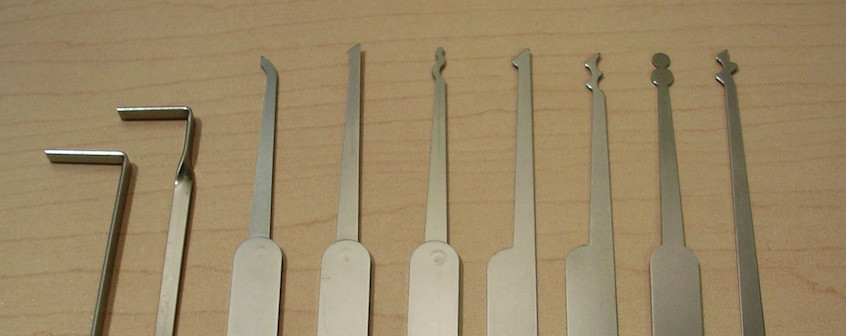

Introduction to Web Security Defence and Testing
Jeremy Stashewsky, Salesforce
Web Security
In this talk...
What is "web security"
Demonstration of ZAP & XSS
How to defend against XSS
Future directions in security
Security
What is Information Security?
like Physical Security, concerned with keeping things & people safe
but just concerned with digital information, computers, and networks
Web security is one aspect of Information Security (InfoSec)
by analogy:
Anti-Security
certain actors, often called "attackers", will try to break security
attackers can be "White Hat" if considered ethical/legal
attackers can be "Black Hat" if considered unethical/illegal
this is often highly subjective; really just two sides of the same coin
Locks don't care for your ethics
A mentor of mine once said:
"Locks only keep honest people out"
... which, by analogy, is like saying ...
"Why would the User would ever do that?!"
That doesn't mean you shouldn't learn to lock-pick
metaphorically
But why lockpick when you can use a screwdriver?!
It doesn't take specialized tools!
like the screwdriver, there are ubiquitous InfoSec tools
lockpick sets are like automated InfoSec tools; just make it easier in some cases
Tools aren't intrinsically "bad" or "evil"
Knowing the tools means knowing how they work
knowing everyone's got a screwdriver...
... maybe you put the screws on the secure side of the door
... or, maybe weld the latch shut
This isn't a talk on ethics, but ...
Disclaimer: if you take something from this talk and do something irresponsible, I won't be held liable.
You should not attack any applications other than your own, and only do that with permission from the appropriate authorities (e.g. your company, your school)
So...
Be awesome and responsible!
Career Paths
To generalize:
Attacker - paid to break into things
Defender - paid to make things less break-in-able
Builder - paid to ship a product, apply defenses
Let's Attack!
App, Tool, and Objective
The App
Gruere Codelab
google-gruyere.appspot.comThe Tool
OWASP ZAP

The Objective
Find a Cross-Site Scripting (XSS) vulnerability
Roughly, XSS is when you can run JavaScript on someone else's page
... demo ...
(For those reading slides after the talk, be sure to set the Scope to http://localhost:8008 and then enter Protected mode)
Focus: XSS
- The page had a template slot for blahblah
- the user-controlled value was placed there verbatim
- we were able to "break out" of HTML context into JavaScript context
- we were then able to obtain their session cookie (authentication)
Defending against XSS
Fixing Gruyere
Gruyere has more to offer!
For more challenges, see the Gruyere Codelab page!
Going Forward
OWASP Top 10
Mobile Security
Secure Development
modelling and coding practices